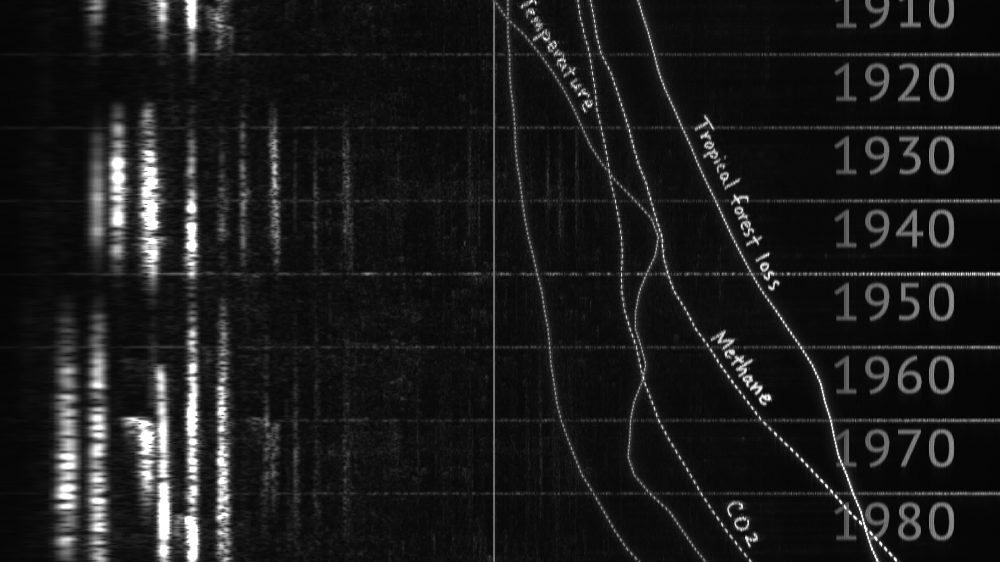
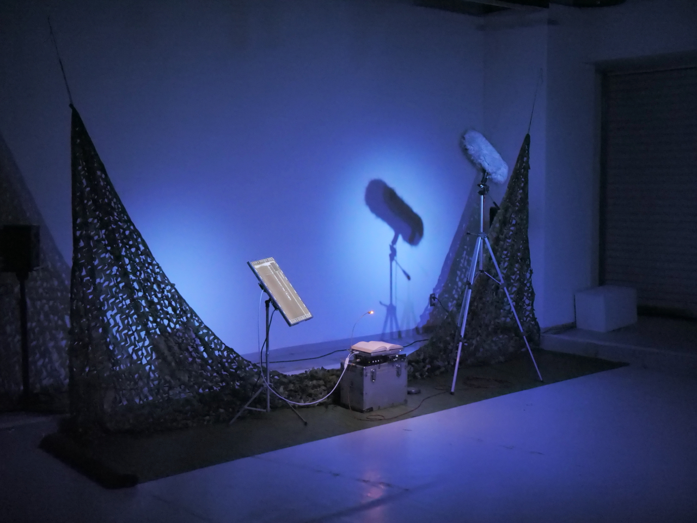
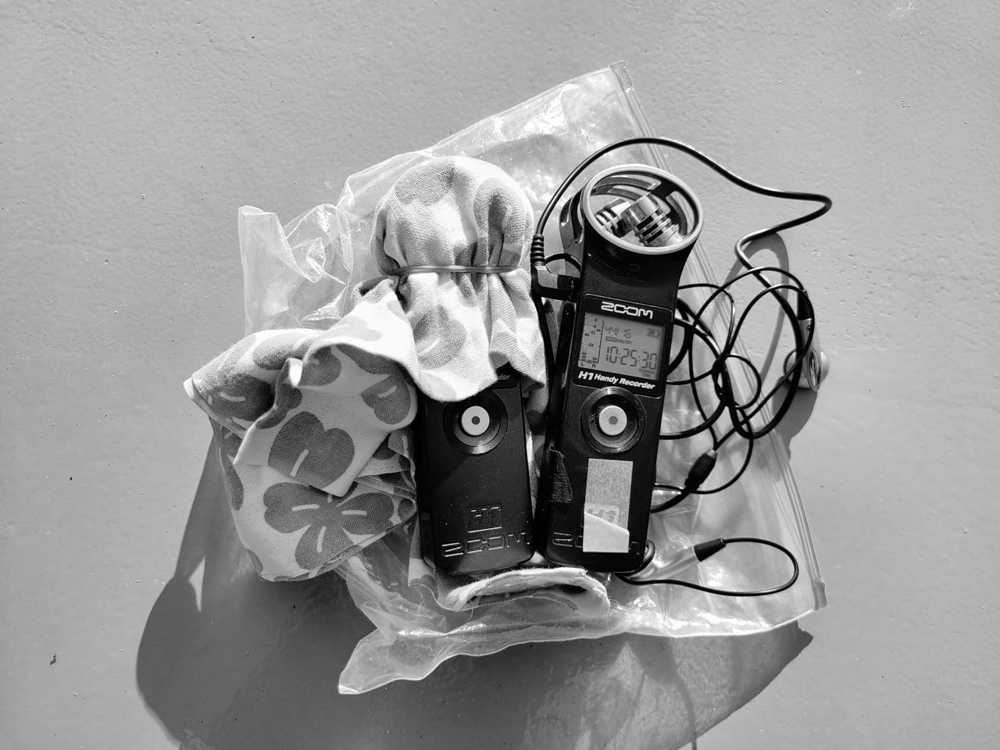

誉田千尋
Chihiro Homuta
Sound of nature?
Works
Events
About
Documents
Works

ナハトムジーク | Nachtmusik
1次アンビソニックオーディオ、シングルチャンネルヴィデオ / 22分 / 2023
First Order Ambisonics audio, Single channel video / 22min. / 2023

ほとゝぎす | Hototogisu
ミクストメディア / 2023 | Mixed media / 2023

声を接ぐ | Graft the Voices
録音 / 2020~ | Recording / 2020~
※2023年以前の作品は
旧サイト
もご覧ください。